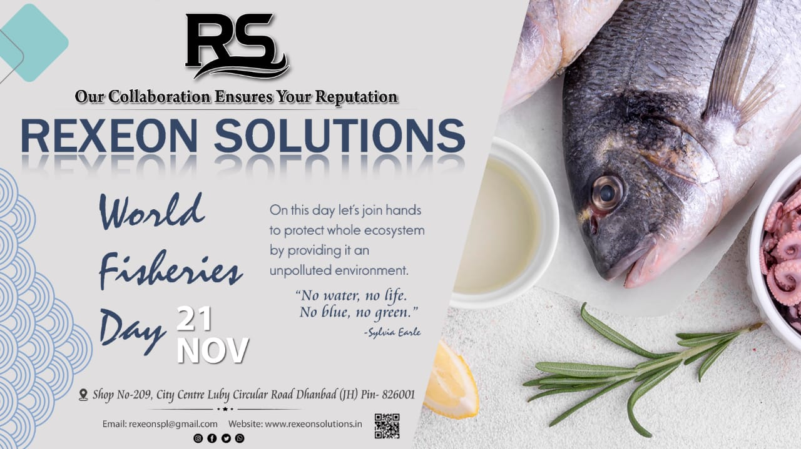

World Fisheries Day
World Fisheries Day is celebrated on 21 November every year by the people around the world .On our planet a group of people rely on fisheries and aquaculture for their livelihoods. Fishing fulfills the requirement of millions of humans and it’s one of the biggest source is ocean or sea.
November 21 is a day on which fishing community draws attention of whole world towards the value of healthy oceans ecosystems and also on finding the solution for maintaining fish stocks. Fish stock regeneration is possible with the help of not only government but also with people in the vicinity .Celebration of this day by fishing communities shows that they are concern about human lives that is why they organize dramas, workshops, cultural programs and exhibitions to make people aware about the serious issues like degeneration of the fish diversity, fish habitats ,water pollution and many more which has direct very bad effect on the lives of aquatic species and human being as well .
To deal with all these issues , in developing countries aquaculture improved by food and nutrition security as well as promote economic growth and protect our environment by preserving natural resources like rivers,canals,reservoirs,ponds etc.. As we know that health of the aquatic ecosystem depends on the fish diversity. But severe ocean and coastal pollution by human activities like industrial or domestic work are very much responsible for depletion of fish stocks.
Fishery, fish Farming or Pisciculture is the very popular method of growing fish or other aquatic life. Throughout the decades, it has taken the shape of big enterprise helping a major population in supplementing their food needs. With its growing demand, the need of smooth fishery business management & availability of safe fishery products has taken a leap.
We tried to picturize the Indian Fishery sector with the help of fig drawn.
India is known as a third largest producer of fishery products next only to China and Peru and it ranks second in aquaculture production in the world. India is among the largest exporter of marine products in the world and in Asia as well.. Fish is an important source of nutritional protein, especially for the growing population. A major part of India’s fish production is used for domestic consumption. India has a vast area of fisheries potential for deep sea fishing. Its coastline bordering Indian Ocean, Arabian Sea and Bay of Bengal and it has rivers and other subsidiary water channels reservoirs ponds in villages of India.
The Occasion reflects the management of underwater life and also focusing on issues and values of Marine life .Life below water is for everyone on this earth.
The Occasion reflects the management of underwater life and also focusing on issues and values of Marine life .Life below water is for everyone on this earth.
There are several Central and State Sponsored Government programs for promoting fisheries:
o Swarnajayanti Gram Swarozgar Yojana.
o Rural Employment Generation Program.
o District Rural Industrial Project.
o Support to Training and Employment Program.
o Development of Women and Children in Rural Area.
Public sector banks offer financial support for promotion of fisheries by women. For example, Rashtriya Mahila Kosh offered by State Bank of India provides credit facilities which are repayable on easy terms. This has enabled empowerment of women involved in the fisheries sector. National Bank for Agriculture and Rural Development (NABARD) promotes capacity building needs of women, provide access to credit, and engineer an appropriate credit delivery system to women. Small Industrial Development Bank of India provides credit and training facilities.
With the help of all these efforts ,India is making rapid strides with its Blue Revolution and today ranks third in the world in Fishery. It has made enormous progress in India, largely driven by markets and specific innovations, but it could affect the environment and feed quality. Fish demand depends on how affordable fish remains and what access they have to the supply
sources of fish production in relation to incomes, and what policy adjustments, technical and business solutions are needed to help the poor to meet these challenges.
The present status of Indian seafood industry emphasizes on the need for special processing technologies like modified atmosphere packaging, active food packaging, high pressure processing, high pressure assisted freezing, pulse light preservation techniques.
There are a few suggestions for improved methods to ensure better returns :
• Identification of novel packaging materials and development of containers and methods for fishery products. Diversification of products for the export market.
• Value addition and product development for economic utilization of low value fishes and discards.
• New processed fishery products for the domestic consumers at economic prices. • Modifications in traditional fish processing
• Utilization of fishery wastes as raw materials for the production of useful value-added products.
• Better methods for the utilization of deep sea and cultured fishes.
• Improved methods for the transportation of fish and fisheries products including live fish.
In the North Eastern Region ,Rexeon Solution has stepped toward enhancing and improvising the quality of all food products along with fisheries items by testing them on the parameters allowed by FSSAI rules and regulations.